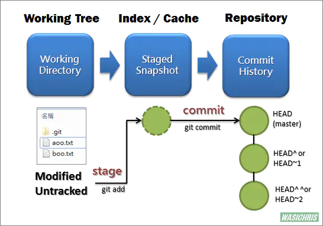
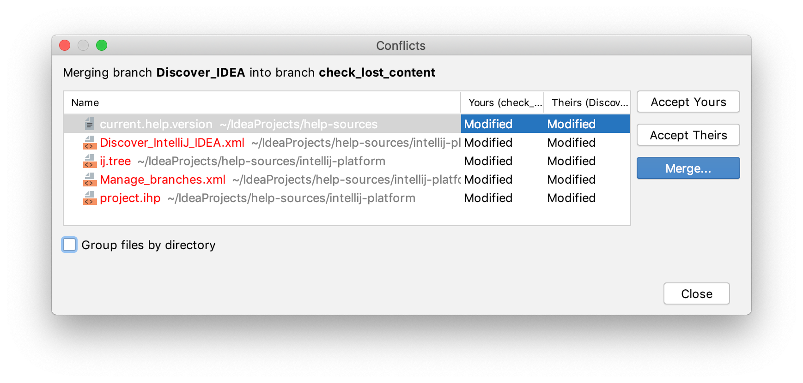
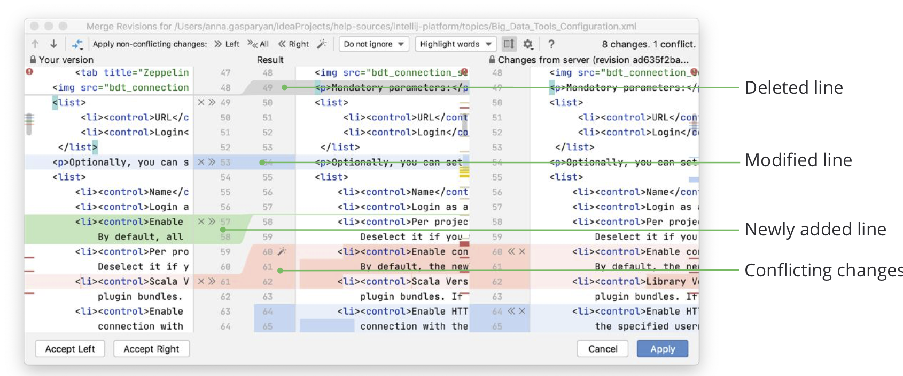

｜ 今天在公司使用git rebase master解冲突失败，同事悉心教我，下来再研究一下。
git rebase master
0. 回退分支
这一步可以跳过，只是我错误rebase操作导致目前分支代码不正常，需要先回滚代码。
git log
commit b77bd104afddea0cb0c861dd03ecd3350848xxxx (HEAD -> i18n_author_guide, origin/i18n_author_guide)
Author: lishenyu <lishenyu@xx.com>
Date: Mon Nov 14 20:16:42 2022 +0800
fix: rebase master
commit 1afc280edcc522f1749112476a0406ba0683xxxx
Author: zheng <zheng@xx.com>
Date: Wed Nov 9 14:14:16 2022 +0800
fix: idl更新
可以看到，我需要通过logID回退到历史版本。
git reset --hard 1afc280edcc522f1749112476a0406ba0683xxxx
HEAD is now at 1afc280 fix: idl更新
git reset实现回退操作。首先需要明确三个区域：工作区/ 暂存区/ Repository。
我们对工作区中的代码进行修改，使用git add .将修改的所有代码添加到暂存区，使用git push将暂存区中的代码提交到远程的Repository。

- –hard 撤销工作区所有未提交修改，将暂存区和工作区都回到上一个版本，删除之前的提交信息
- –soft 保留工作目录中的内容，把新内容放置在暂存区。
- –mixed 所有修改放在工作目录 ⚠️：git reset后再次push会引发冲突，需要push -f
1. git rebase master
确保master分支已于远程同步，使用git rebase master，解决冲突。
对于冲突的解决需要看清楚，如果是业务冲突需要手动合并，如果是框架生成的代码冲突需要按照master的代码来。
如果rebase时存在冲突，可以使用goland的可视化工具，git->resolve conflicts，出现此次rebase冲突的代码，可以直接点击进入响应文件进行冲突的手动解决。

左边是自己分支的代码，右边是要rebase的分支的代码，中间是修改后的代码。根据需要accept left或accept right。点击apply后自动实现 git add .,下一步可以直接git rebase --continue。

2. git push -f
当解决完所有的冲突成功合并后，需要使用push -f强制推到远端。
需要注意：git rebase后提交，相当于将自己的分支提交到了master分支后面，
用下面两个动图可能更加清晰：
merge:
 rebase:
rebase:

git rebase的其他指令
同时，在使用rebase master合并分支的时候，有时也会看到终端提示git rebase --continue\ git rebase --abort \ git rebase --skip
- 前两个我们都熟悉，第一个是解决冲突后的继续合并，第二个是放弃当前的所有合并还原代码。那么第三个呢？因为我就是使用第三个命令后所以屡屡丢代码～
对于git rebase 的过程，其实分两步。
- 产生master分支的备份，放在临时分支
- 在临时分支上应用当前分支的每一次提交，如果出现冲突就会终止
而这个git rebase –skip，其实就是跳过某次提交，所以合并到最后肯定会丢代码。😅慎用该指令哈。
参考
git reset: https://www.jianshu.com/p/c2ec5f06cf1a
resolve conflicts: https://www.jetbrains.com/help/go/resolve-conflicts.html
rebase和merge: https://waynerv.com/posts/git-rebase-intro/